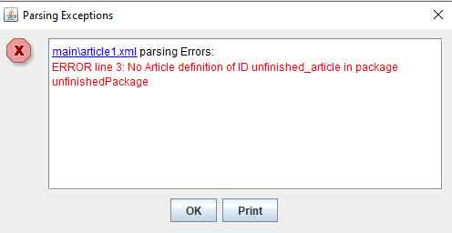
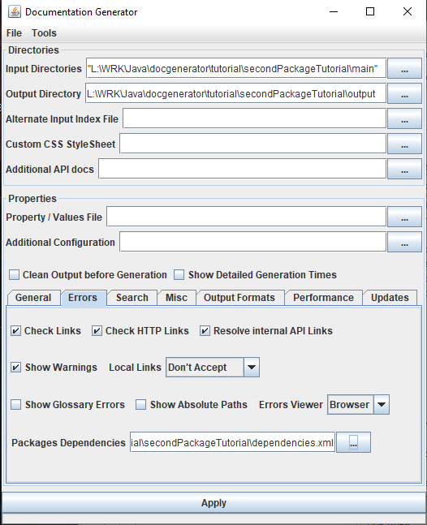

Home
Categories
Dictionary
Download
Project Details
Changes Log
What Links Here
How To
Syntax
FAQ
License
Second packages tutorial
1 Create the wiki directory structure
2 Create the content of the main package
3 Create the content of theunfinished package
4 Adding an index
5 Generate the wiki with only the finished packages
6 Create dependencies between the two packages
7 See also
2 Create the content of the main package
3 Create the content of theunfinished package
4 Adding an index
5 Generate the wiki with only the finished packages
6 Create dependencies between the two packages
7 See also
This article is a tutorial to use packages in your wiki. We will separate finished from unfinished content, and generate the wiki with only the finished content. We will not emit errors for references from the finished package to the unfinished package.
We xant to add a link from the first article in the closedPackage package to the first article in the openPackage package. For that, we have to add the
However, after we Click on Apply, we have the following error message:
This is normal because we have a reference to an article which is not included in the wiki generation.
Now we don't have any error anymore.
Create the wiki directory structure
We will create two directories:- One main directory which will contain a package with the "finished" content
- One unfinished directory which will a package with the "unfinished" content, that we don't want to include in the wiki yet
<package package="mainPackage" />and package.xml file in the unfinished directory with the following content:
<package package="unfinishedPackage" />We now have two packages, one for the finished content, and one for the unfinished content.
Create the content of the main package
We will create one article in the main directory:<article desc="first article"> The content of the first article. Link to the <ref id="unfinished article" package="unfinishedPackage" />. </article>
Create the content of theunfinished package
We will also create one article in the unfinished directory:<article desc="unfinished article"> The article content. </article>
We xant to add a link from the first article in the closedPackage package to the first article in the openPackage package. For that, we have to add the
package attribute to the reference:<article desc="closed article"> The closed content of the article. Link to the <ref id="first article" package="openPackage"/>. </article>
Adding an index
We will just create an index article in the main directory (the mainPackage package):<index> The index. </index>
Generate the wiki with only the finished packages
To generate the wiki with themainPackage only, we will specify onyl set the the main directory in the "Input Directories" field.However, after we Click on Apply, we have the following error message:

This is normal because we have a reference to an article which is not included in the wiki generation.
Create dependencies between the two packages
We will create a packages dependencies file which will accept all dependencies betwenn the packages, but will not show references errors:<packagesDependencies defaultCheck="accept"> <package name="mainPackage" showUnresolvedReferences="false"> <dependency name="unfinishedPackage" /> </package> <package name="unfinishedPackage"> <dependency name="mainPackage" /> </package> </packagesDependencies>

Now we don't have any error anymore.
See also
- Tutorials: This article presents a list of tutorials
- Don't include unfinished content: This article explains how the use cases of packages
×

Categories: Tutorials